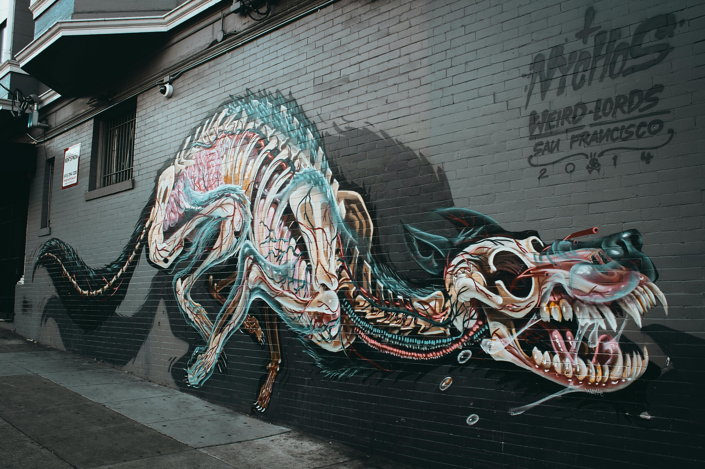
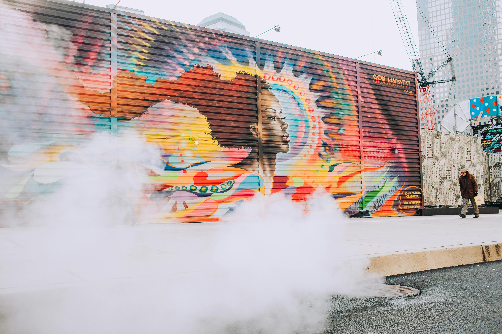
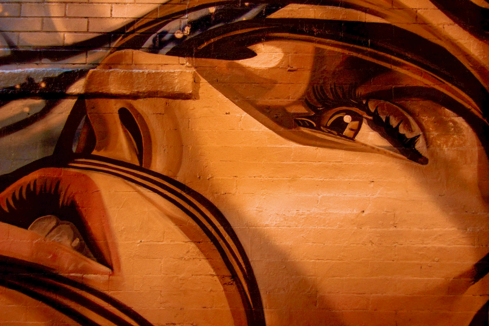
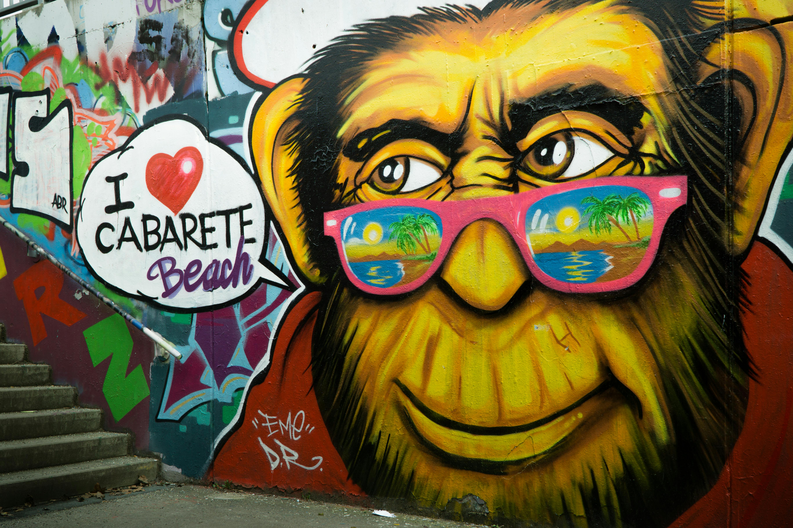
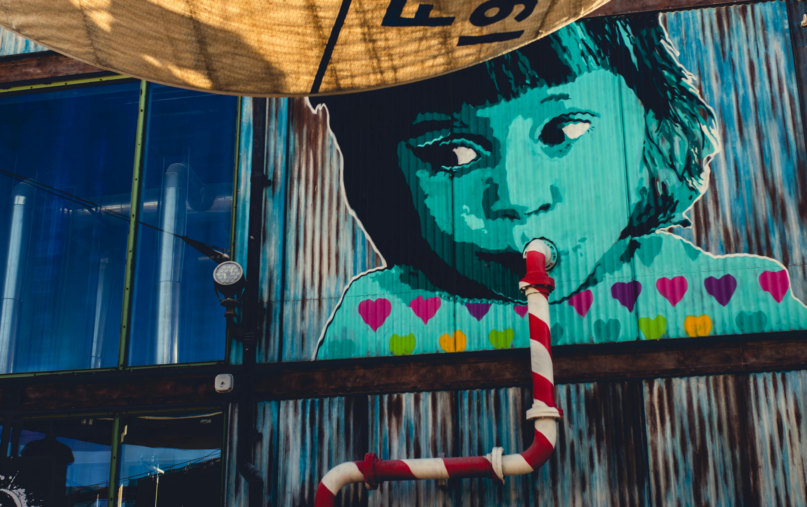
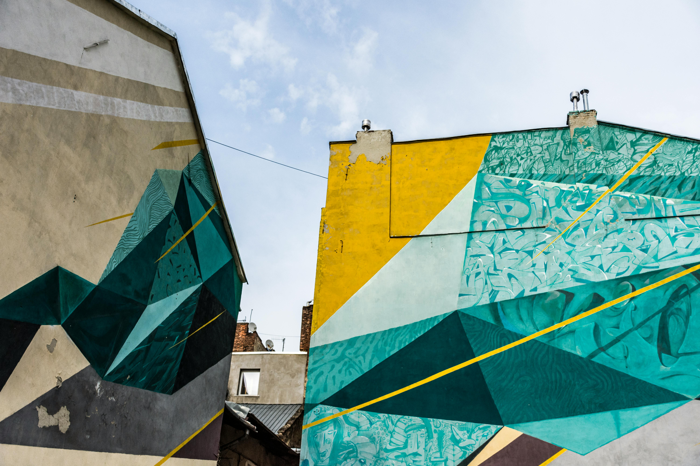
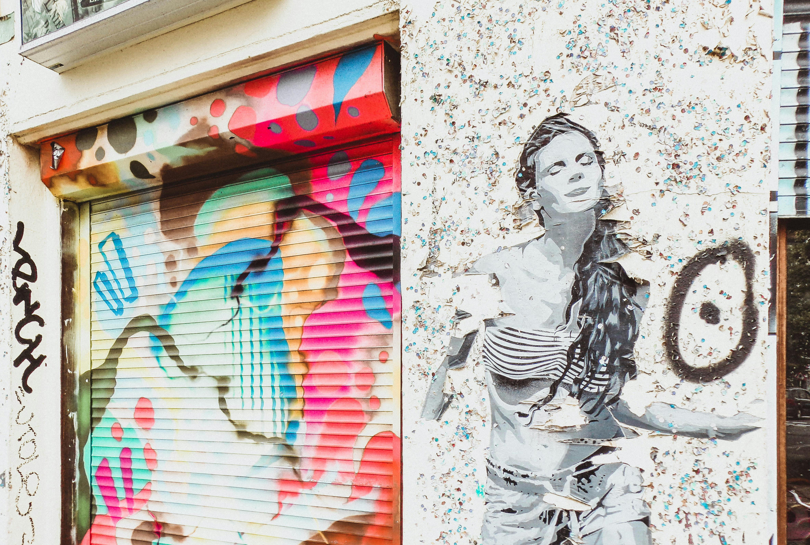
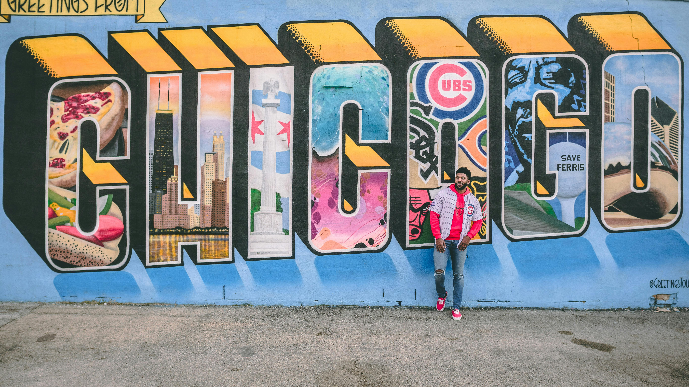

Muralismo
Arte público en movimiento — color, textura e identidad en gran formato.
Sobre el muralismo
El muralismo celebra el espacio público como lienzo colectivo. A través de capas, texturas y color, transforma la ciudad en narrativa viva: identidad, memoria y resistencia con trazo a gran escala.







